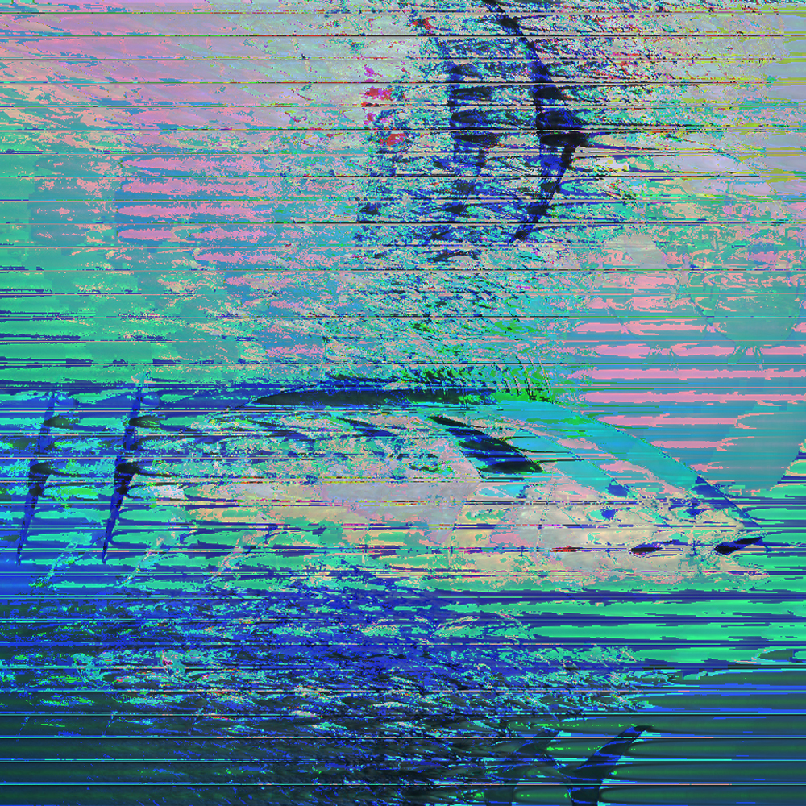
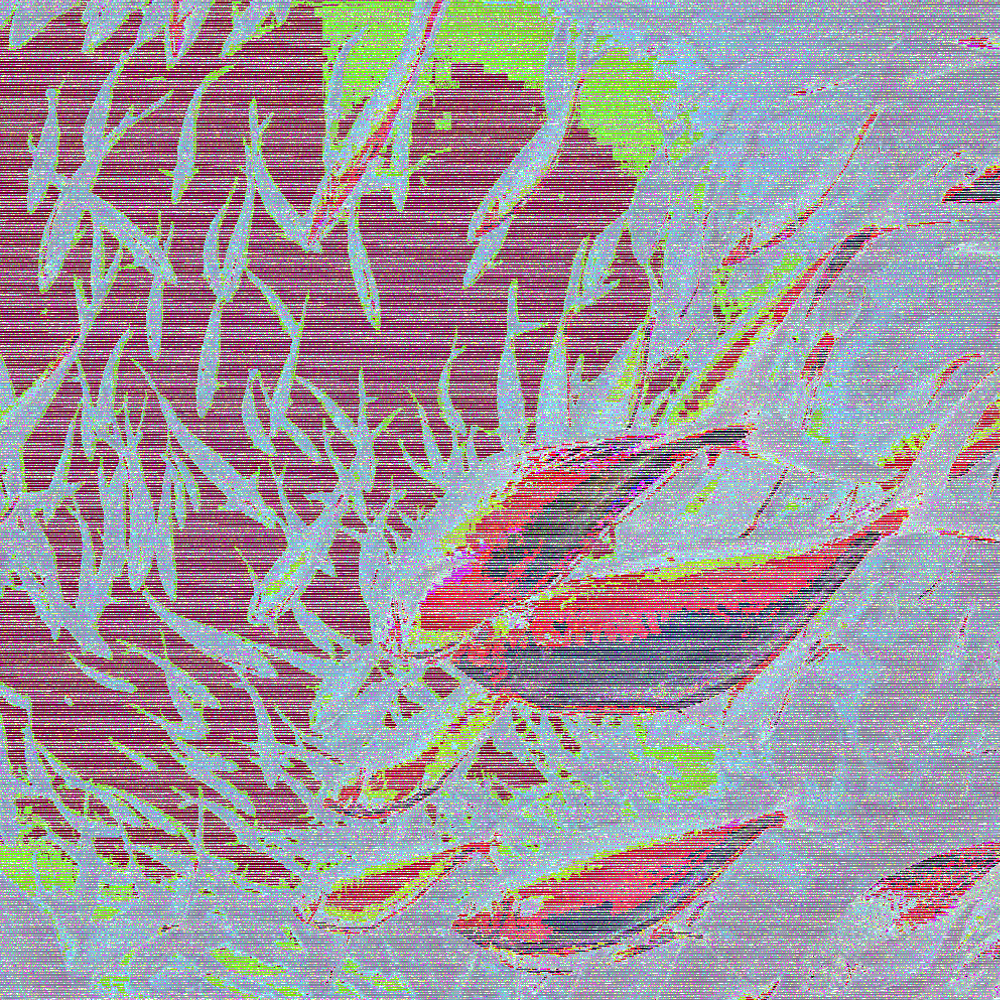
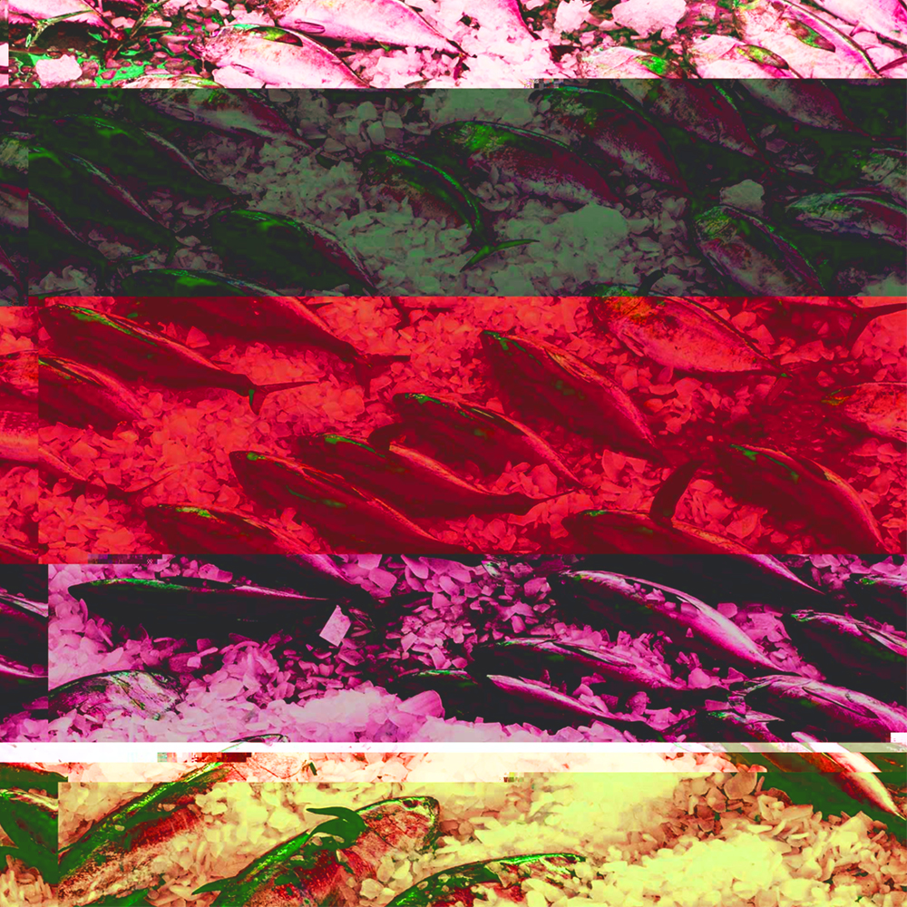

For this image I took raw data and opened it in audacity. I used the effects Delay and Phaser and then I touched up the hue, saturation, brightness and contrast in photoshop. As the start of my sequence, I kept the colors pretty similar to the original image. The original meaning behind my choice of glitches in this image was just the fact that they looked cool. But I think the delay and phaser effects helped make it look like there's multiple tuna swimming close by, supporting the fact that tuna swim in schools/groups.
This image I also glitched using audacity. I used the Tremolo effect with wet scaled to 100 (because fish). In photoshop I changed its hue to red and touched up the saturation, contrast and brightness. I needed a middle image that bridged the sequence and so I used a photo from the perspective of something in/under the swarm of tuna. The glitches and hue shift made me think of a fish sonar, a device fishermen use to detect fish underwater.
I used Notepad++ (text editor) to glitch my final image. I ended up adding a bunch of random sentences and words throughout the data. I wrote about fish, my family, the upcoming weekend and the music I was listening to while doing this assignment. I used photoshop to mess with the hues to be more warm and I touched up on the contrast and brightness. The choppy glitches and warm hues are meant to support the content of the photo and help resemble the tunas unfortunate end.